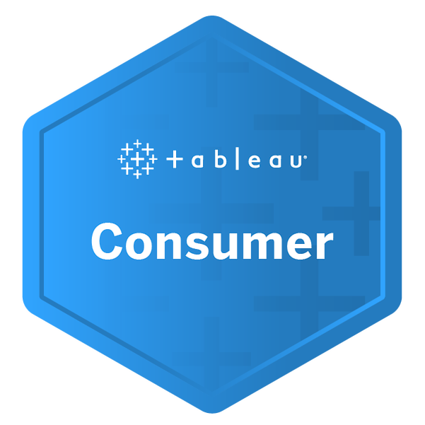

Thank you for all that you have brought to this team - you have gone above and
beyond- and have shown
incredible grit. Your solution orientation and team player attitude is definitely going to take you places!
Please continue to stay in touch with the team - you have been invaluable. And such an integral contributer to
the momentum created on the MAL account. Thank you for all your effort.
Kirana Singh | Customer Experience Manager
Genex Insights | 2020
It has been an absolute pleasure working with you!
Jessica Cullis | Product Development Manager
Genex Insights | 2020
It was an absolute pleasure having you on our team !! You have added tremendous
value and assisted in getting it over the line with client.
Sumaya Naidoo | HR Manager
Genex Insights | 2020
Thanks for 5 months of hard, focused work.
Tim Matthis | CEO
Genex Insights | 2020
Great ability to think on your feet and find solutions, and always looking for an
opportunity or reason why something might be wrong as opposed to going into panic mode, you work well under
pressure.
Phindile Vilakazi | Research Executive
Genex Insights | 2020
Thanks for all your hard work, and for being such an incredible team player – to the
MultiChoice Africa team and to the rest of CX!
Kirana Singh | Customer Experience Manager
Genex Insights | 2020
Working with you for 4 months has been a great experience. You contributed immensely
to stabilising the account with your proactive work ethic and tireless attitude to making things “work”. Your
technical skills and great understanding of data/software made life that much easier with a bulk of the
queries – we had way too many “Kishan-type queries” and working closely with you taught me a whole lot as
well.
Yonela Rozani | MAH Account Manager
Genex Insights | 2020
Very punctual. You have never ran late on submissions and even closed out on queries
earlier than the deadline. Resilience and GRIT, I really admire your ability to remain positive and focus on
way forward when we are faced with challenges.
Phindile Vilakazi | Research Executive
Genex Insights | 2020
Kishan Narotam
Associate Consultant
KEY SKILLS
Time & Self Management
Communication
Leadership
Complex Problem Solving
Analytical Skills (Business and Data)
Software Development
EDUCATION
Bachelor of Science in Engineering (Electrical)
Information
University of the Witwatersrand
Johannesburg, South
Africa
2019
IEB
National Senior Certificate with Advanced Programme Mathematics
St John's College
Johannesburg, South Africa
2012
INDUSTRIES
Logistics & Market Research
Education & Training
ICT (Information & Communication Technologies)
Engineering
Insurance
Banking
DEMOGRAPHICS
Gender · Male
Disability · None
Race · Indian
Languages · English
TOOLKIT
Software Development
MATLAB · C++ · Java · HTML · CSS · Python · NodeJS · Assembly
Projet Management
Scrum · Kanban · MS Project · Trello · Test Driven Development
Databases
MYSQL · MS Access
Continuous Integration
Git
Analysis
MS Excel · Power BI · Tableau
Tecnhnical Writing
LaTeX · MS Word · MS PowerPoint · MS Outlook · MS Visio
Graphical Editing
Adobe Premiere Pro
CERTIFICATES
ICAgile
ICAgile
Certified Professional ·  · 04 May 2020
· 04 May 2020
Tableau
Tableau Author · · 29 May 2020
Tableau Consumer ·  · 26 May 2020
UiPath Academy
RPA
Business
Analyst Foundation ·  · 12 May 2020
· 12 May 2020
RPA Starter
Training ·  · 03 March 2020
· 03 March 2020
Udemy
The Complete Power BI Practical Course 2020 ·  · 08 July 2020
· 08 July 2020
The Business
Intelligence Analyst Course 2020 ·  · 19 June 2020
· 19 June 2020
Complete
Introduction to Business Data Analysis ·  · 09 March 2020
· 09 March 2020
ECDL Foundation
International
Computer Driving Licence (ICDL) ·  · 04 May 2012
· 04 May 2012
PROFESSIONAL PROFILE
Information (Electrical) Engineer currently employed as an Associate Consultant at IQbusiness, with a drive in the corporate environment and the desire to apply himself to his maximum potential. Having worked on various projects where his role ranged from lead engineer to a business analyst and to a data analyst, Kishan's approach to work is methodical and analytical. The execution of the task is planned accordingly, to complete all objectives in the most efficient and successful manner so that the maximum value can be added.
WORK EXPERIENCE
Associate Consultant
IQbusiness | Johannesburg, South Africa
29/01/2020 - Current
-
Responsibilities: Kishan was part of the BasIQs programme within IQbusiness. He has worked as a
business analyst on an internal project as well as an external project. He has successfully performed
the role of a Data Analyst for Genex Insights and is currently an analyst at Absa Group Limited.
Teaching Assistant
University of the Witwatersrand | Johannesburg, South Africa
07/2019 - 10/2019
07/2018 - 10/2018
Responsibilities: Kishan was required to help run, execute and demonstrate laboratories and tutorials. In doing so he required extensive knowledge of C++, SFML, GitHub and Git collaboration. Throughout the course, Kishan assisted the students in a variety of ways relating to their work.
Intern
Liberty Life Head Office | Johannesburg, South Africa
07/2017
28/11/2016 - 18/01/2017
30/05/2016 - 08/07/2016
Responsibilities: Kishan worked in the IT department of the company assisting the HOD in various projects. The projects tasked to Kishan ranged from data collection, database management, network mapping, system analysis, C++ and VBA programming and Excel programming.
Intern
MICROS South Africa (Pty) Ltd | Johannesburg, South Africa
26 June 2015 - 03 July 2015
Responsibilities: Kishan was challenged with analysing C# code for an ongoing project and was tasked with converting the project into C++. Following this, Kishan had to design and implement a basic user interface for the analysed code.
PROJECT EXPERIENCE
Analyst · Model Risk Data Discovery and Design
Absa | Johannesburg, South Africa
27/07/2020 - Current
Project Overview: The model risk architecture and processes for credit regulatory reporting are sub-optimal in terms of business efficiencies being realised across the value chain. The project team will develop a target architecture and roadmap in order to identify opportunities for unlocking sustainable efficiency.
Responsibilities: Kishan is an analyst, playing a supporting role to the team.
Data Analyst · MultiChoice Africa
Genex Insights | Johannesburg, South Africa
09/03/2020 - 31/07/2020
Project Overview: The project involved working on the MultiChoice Africa account within the CX team, where the data's integrity had to be investigated and monitored. In conjunction to this assisting the team in applying various methodologies that would allow the team to become more proactive in handling the account, and to improve relationships between the MultiChoice Africa and Genex Insights.
Responsibilities: Kishan was placed as a Data Analyst within the Genex Insights’ CX team initially investigating a data discrepancy issue, utilising the Genex Insights VOC platform to assist with data retrieval, mapping & managing for MultiChoice Africa. Kishan also updated & created new dashboard views for surveys that had existed & were introduced respectively. Kishan's understanding of the platform gave him the opportunity to train new MultiChoice members on using the platform, while handling queries daily.
Business Analyst · IQbusiness Talent Management Solution
IQbusiness | Johannesburg, South Africa
06/02/2020 - 25/02/2020
Project Overview: IQbusiness required a proposal for a solution which would aid in the improvement of their current talent management processes, allowing employees and managers to monitor personal development and talent.
Responsibilities: Kishan was part of the business requirements team, whose responsibility was focused on creating the business requirements document, by consolidating prior teams work. Kishan was also part of the governance team and took control of consolidating the project initiation document for the final proposal, as well as presenting the final proposal.
Business Analyst · IAM AfricaAccess | CSO Testing Proposal
Absa | Johannesburg, South Africa
30/01/2020 - 04/02/2020
Project Overview: The IAM project was an enhancement on Absa's existing Access Management System, which looked into adding an amend capability. The testing project looked at proposing an idea for a separate testing team to be created within Absa's CSO team.
Responsibilities: Kishan worked as a Junior business analyst, and his responsibilities involved creating the initial draft of the business requirements document. The testing project involved creating a proposal for the testing team based on research and best practices.
Lead Engineer · Design of a Thermally Controlled System for Medications
University of the Witwatersrand | Johannesburg, South Africa
17/09/2019 - 25/10/2019
Project Overview: The project involved designing a thermal system that can control the temperature of medication in it. The design was unique based on current literature and simulated in a multiphysics programme.
Responsibilities: The lead engineer had to design and simulate the designed container making sure that the design was tested utilising free-to-use multiphysics programme, calculating cost & power concerns. Subsequently, the project was documented accordingly.
Co-Lead Engineer · Image Compression Based on Non-Parametric Sampling in Noisy Environments
University of the Witwatersrand | Johannesburg, South Africa
01/07/2019 - 11/09/2019
Project Overview: The aim of the project was to create a method of image compression that involved creating holes in the image, encoding, transmitting said image through a noisy channel and filling these holes.
Responsibilities: Kishan created, implemented and developed the compression scheme based on current existing schemes. The compression scheme was tested and analysed against existing schemes and the results were documented accordingly.